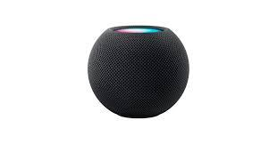

Ciberataque a Booking, control de edad en internet y nuevas medidas contra el spam
La noticia sobre el ciberataque a Booking.com, junto con el control de edad en internet y las nuevas medidas contra el spam, muestra cómo están evolucionando los derechos digitales en la actualidad. En el caso del ataque, se produjo un acceso no autorizado a datos de usuarios, como información de contacto y detalles de reservas; aunque no se filtraron datos bancarios, el principal riesgo es el phishing, ya que los ciberdelincuentes pueden usar esos datos para enviar mensajes falsos y engañar a las personas. Además, se menciona que la Unión Europea está desarrollando un sistema para verificar la edad de los usuarios en internet sin comprometer su privacidad, con el objetivo de proteger especialmente a los menores, y que España será uno de los primeros países en probarlo. Por otro lado, también se plantea una nueva medida contra el spam telefónico, que consistirá en obligar a que las llamadas comerciales utilicen un prefijo específico (400), permitiendo a los usuarios identificarlas fácilmente y evitar fraudes. En mi opinión, esta noticia refleja claramente que la tecnología no solo avanza en innovación, sino también en riesgos, ya que hoy en día no es necesario robar datos financieros para cometer estafas, sino que basta con información básica para manipular a las personas. Al mismo tiempo, las soluciones propuestas van en buena dirección, pero generan dudas sobre su efectividad real y el equilibrio entre seguridad y privacidad, lo que demuestra que la regulación digital será cada vez más importante en el futuro.
Ciberataque a Booking, control de edad en internet y nuevas medidas contra el spam: así avanzan los derechos digitales

En la actualidad, los derechos digitales están evolucionando rápidamente debido al avance de la tecnología. Uno de los casos más recientes es el ciberataque a la plataforma Booking, donde los usuarios fueron víctimas de engaños sin necesidad de que se robaran datos bancarios. Este tipo de situaciones demuestra la importancia de la seguridad en internet y la protección de la información personal. Además, se están implementando nuevas medidas como el control de edad en internet y regulaciones más estrictas contra el spam, con el objetivo de mejorar la experiencia y seguridad de los usuarios en el entorno digital.